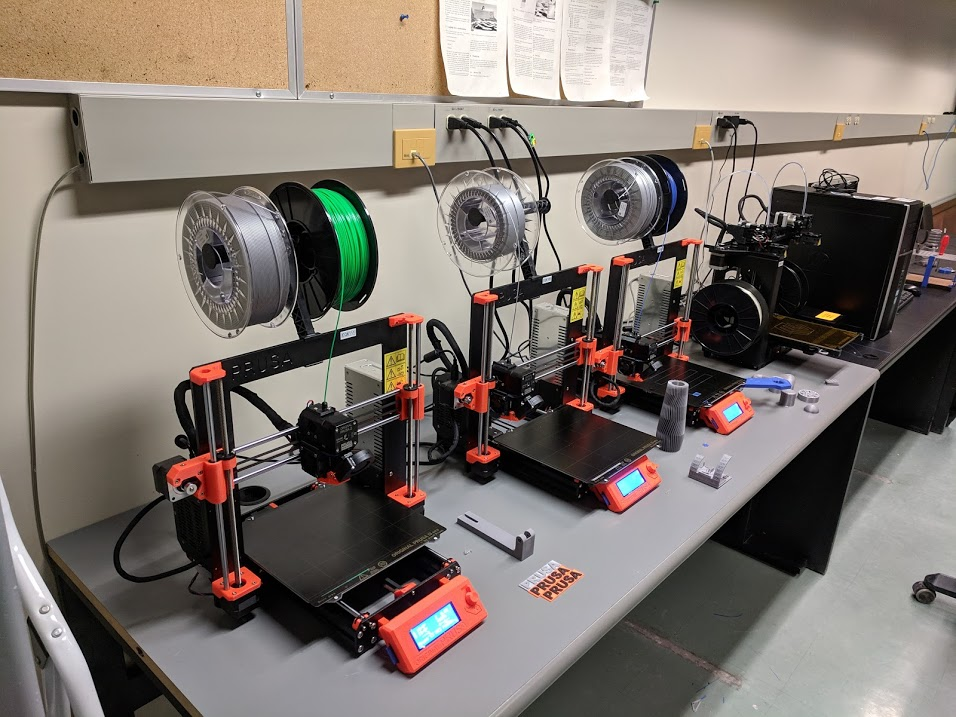
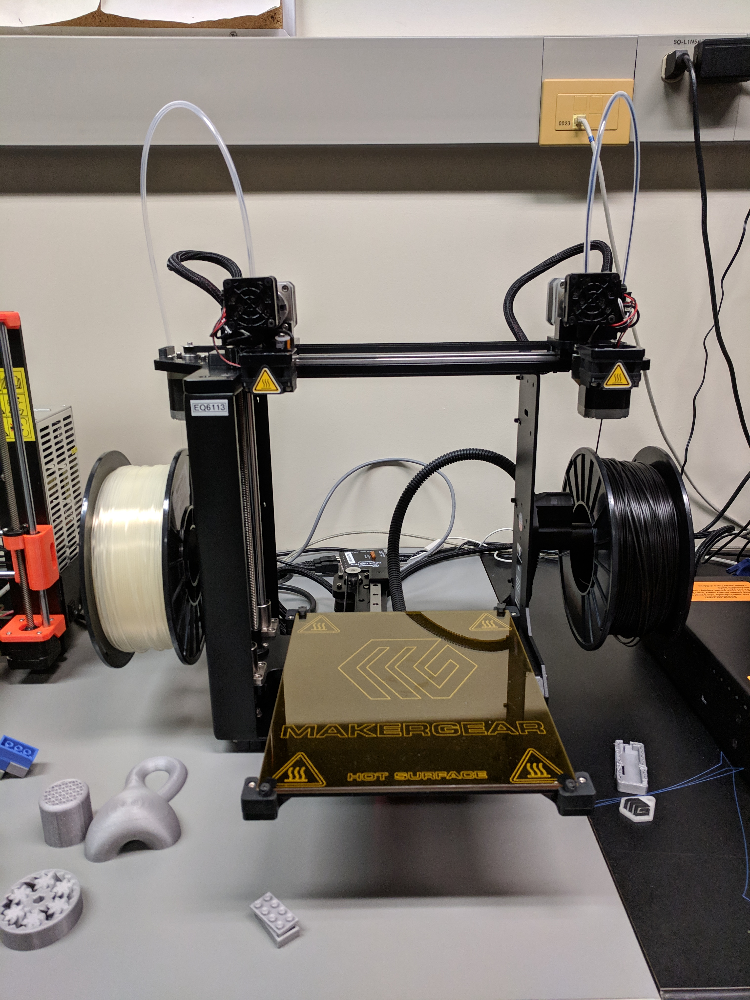
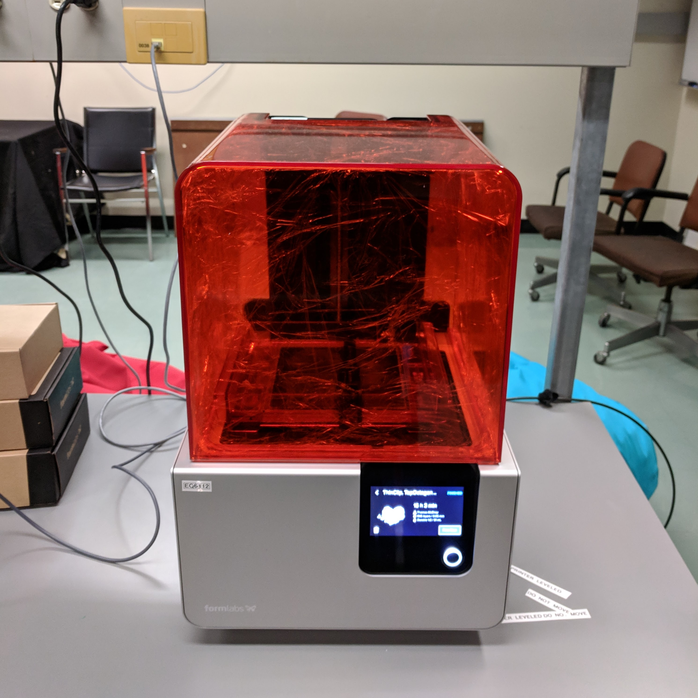

Prusa i3 MK3
We have three Prusa I3 MK3 printers. These printers are fused filament
printers that use spools of PLA plastic. They are easy to operate and affordable
to run, and can meet most users' printing needs.

Useful information:
- official prusa documentation
- features and specs intro to fused filament
- training documentation
MakerGear M2
We have one MakerGear M2 printer. Like the Prusa printers, this one prints
PLA via fused filament. It offers the benefit of having two nozzles such that you
can print multicolor.

Useful information:
- official MakerGear manual
- features and specs
- intro to fused filament
- training documentation
Formlabs Form2
We have one Formlabs stereolithograph (SLA) 3D printer.
Stereolithography (SLA) 3D printing uses a laser to cure solid isotropic parts from a liquid photopolymer
resin.
There are a variety of different resins with different properties to fit various research needs.
Since this printer is more expensive to run and is capable of very high precision printing, it is primarily reserved for research purposes.
Since this printer is more expensive to run and is capable of very high precision printing, it is primarily reserved for research purposes.


Useful information:
- official FormLabs manual
- features and specs
- intro to fused filament
- training documentation